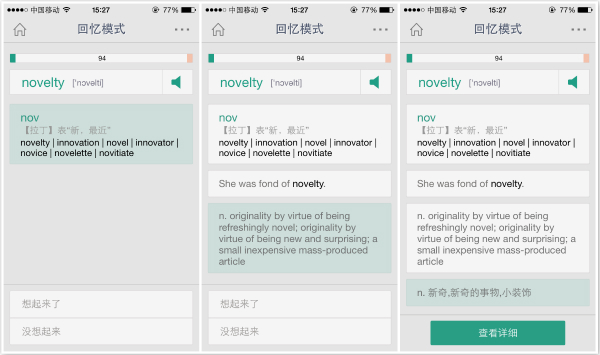
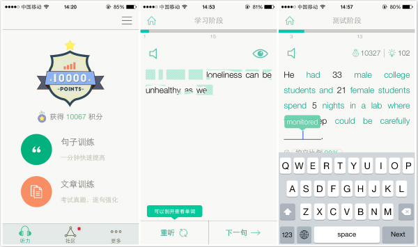
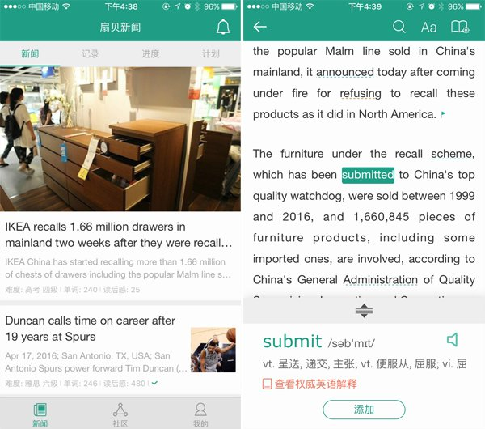
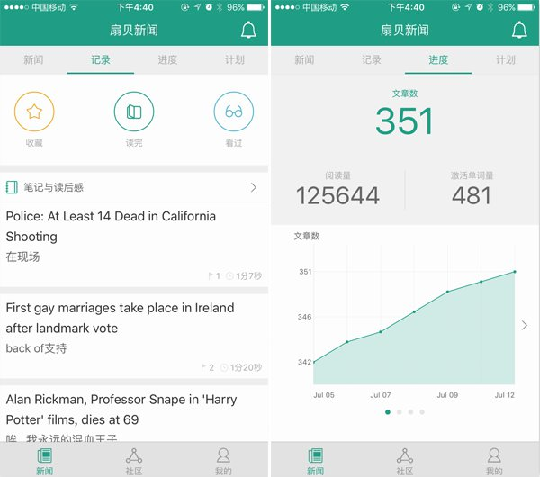
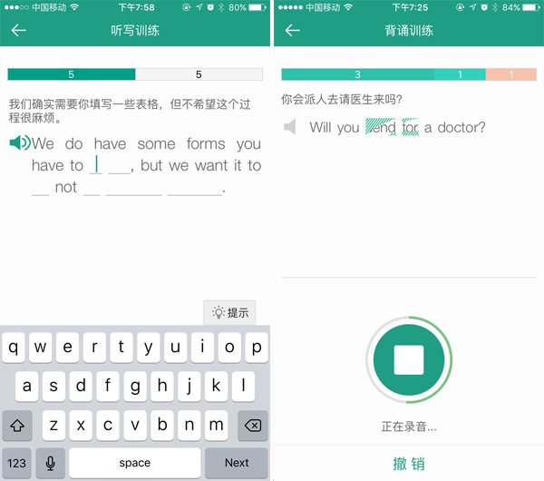
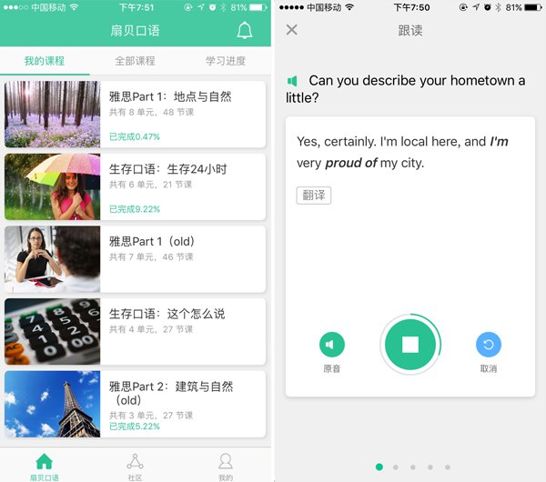

扇贝网有什么不一样
这是我们的理念
知识不是一般的商品，买回来不是你的，放书架上不是你的，存硬盘上也不是你的；只有累过，烦过，咬牙切齿过，山穷水尽过，柳暗花明过，才会是你的。
大家说自己的英语不好的时候，经常会称自己是“哑巴英语”；实际上你问问自己，你的英语会水平比得上一个英国的哑巴么？ 即便你不能流利的口头对话，却可以在纽约时报维基百科上阅读资料和查证分析，在邮件组和Stackoverflow上讨论技术问题，Quora上和世界分享自己的经历和见解，那其实你的英语已经相当好了。
绝大部分在国内受过正规本科教育的人，从小到大学了十几年英语，实际的读写水平依然是不及格的，你号称强于阅读理解，但是一旦离开考试，你通常既不会去阅读，也无从去理解，是不是这样？
最大的症结是什么呢，你一直在把英语当成一门学问在学，而不会主动将其当作一个技能使用。
很多人会说，我也想用啊，但是不先学好怎么用？在他们的想象中，学习不得不是一个厚积而薄发的过程，在学和用之间有一条黑白分明的界限，所以要先花100天专心学习，到了101天，啊，见证奇迹的时刻，突然可以开始用了。
正是这样的想法导致无数人学了十几年英语，依然不停地要从背单词开始，从A背到C，再从A背到C，再从A背到C...... 却始终不敢也不能去读完一篇稍长点的英语文章，勿论一本完整的英语书籍。
我们开发扇贝网以及扇贝系列APP，就是希望帮助大家可以跨越学和用之间的鸿沟，让传统的“厚积再薄发”，变成“薄积而薄发”，改变耗时十几年学习英语却无法有效产出的悲惨局面。
以下是对产品和功能的简要介绍：
扇贝的每一个App都可以独立使用，也可以进行联动以达成更好的学习效果。
一、扇贝单词
扇贝单词是基于启发式学习法的词汇软件，在每步学习过程中，系统不会立刻告知答案，而是会逐步给予词根，例句，英文释义，最后中文释义等不同程度的线索和提示，帮助用户自行回忆和理解。我们也是目前唯一一家，授权引入柯林斯词典，基于英英释义对用户进行训练（不是单纯显示英文释义）的词汇学习软件。

二、扇贝听力
扇贝听力是一个既有效果并且不累居然还有点好玩的听力训练软件，分为两种训练模式：句子训练和文章训练。句子训练以单句为学习单位，根据音频将挖空的句子补充完整，一次只能提示一个单词。文章训练每句话都要反复听，听懂才能进入下一句，听不懂的至少要听三遍才能查看原文，全部听懂后还会逐句挖空测试以检测听力效果。用这样的方法听完一句句，再听完一篇篇，100篇就能见效。

三、扇贝阅读
扇贝阅读每天会更新十多篇英语文章，早晚会自动推送两篇国内外最热门的。用户打开每一篇文章后，系统会自动标出他曾经通过扇贝单词或者扇贝网学过的词汇；如果用户正准备某项考试（例如四六级托福等），文章也会标出该考试要求的词汇。单词和短语都能即点即查，而且可加入学习计划，后续通过扇贝单词或扇贝网进行巩固和复习。

系统不仅会记录你收藏、读完和看过的文章，以及你的读书笔记和读后感。此外，还会完整保存你的所有学习数据，包括每天阅读的文章数量，阅读单词数，以及激活单词数等，记录你的成长轨迹。

通过这样的协同设计，一来用户可以发现自己的词汇完全能够派上用场，二来也可以在阅读过程中学习新的词汇和短语。于是“用”（阅读）和“学”（词汇）就结合在了一起，同时将“用”本身转化为更高层面的学习，不仅学英语，同时也用英语学习其他领域的知识。
四、扇贝炼句
扇贝炼句则是一款短语和句型训练软件，提供了十几门面向听力，阅读和写作的训练课程，超过5000则常用短语和真人配音的例句，用户一旦选择加入课程，那么每一句话都会要求他浏览，填空，乃至最后准确复述；同时根据他的掌握情况，每一句话都会动态的安排巩固复习，直到滚瓜烂熟；在这个过程中，为用户的发音和遣词造句能力打下坚实基础。

五、扇贝口语
扇贝口语是一款让你走嘴、走脑又走心的英语口语软件，包括两个阶段：跟读和复述。通过课前预习-跟读模仿-听音复述-智能打分-精彩解析的流程设计，有助于全面提升英语口语、单词、语法和听力。

口语课程内容包括：雅思口语、生存口语、OMG美语、商务礼节英语等。不管你学的是中考英语、高考英语还是四六级，不管你在备考雅思、托福，还是立志提升职场英语能力，都能找到适合自己的课程。